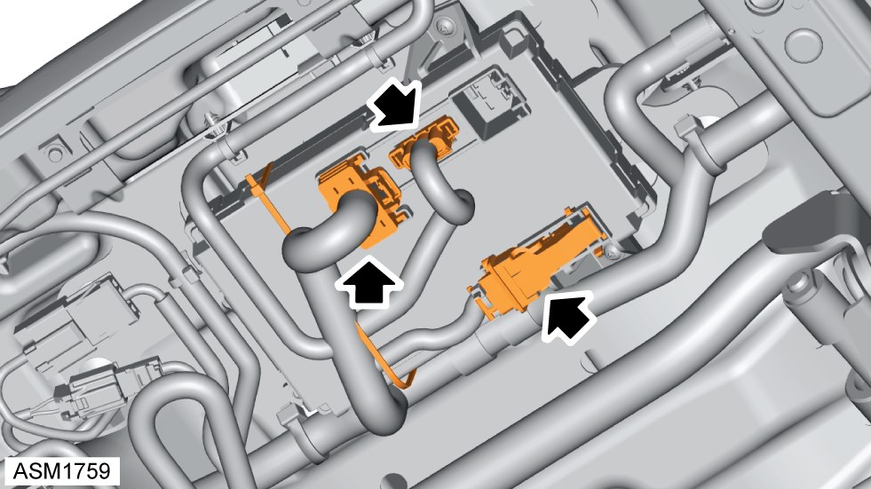
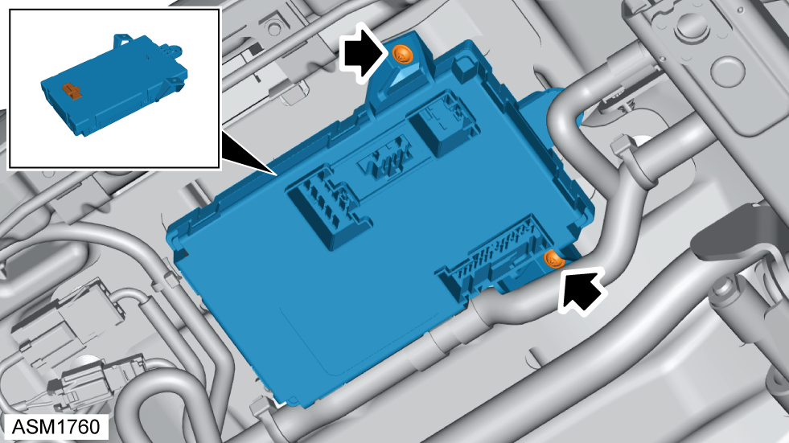

Module - Seat - Left Side
Print
Operation Code: 17.03.21-02
Removal
- Remove seat. Refer to procedure.
- Release cable tie securing harness to seat module.

- Disconnect harness connectors (x3) from seat module.

- Remove Torx screws (x2) securing seat module to seat.
- Release clip securing seat module to seat.
- Remove seat module.
Installation
- Installation is reverse of removal procedure except for the following:
- After installation perform a diagnostic read and clear error memory using Lotus Insight tool.